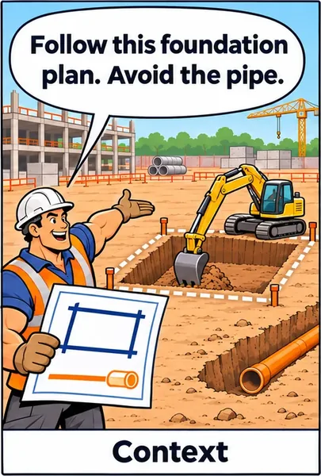

Which risk is greater?
People worry about the risks of AI: hallucination (confident answers that are wrong), slop (bland, low-quality content) and weaker critical thinking. Many also worry about its effect on the environment and on society.
Organisations worry even more: leaked data, weak governance, AI agents acting beyond their remit. No wonder so many hold back.
Of course, the risks are real. But the question to ask is this: which is greater, the risk of using AI or the risk of not using AI?
I believe the greater risk is not using it. The answer is not to avoid AI – it is to use it well, with sensible controls.
- Use public or fictional material, unless your organisation permits more. Work on copies. A copy of a confidential document is still confidential.
- Use the account and features your organisation has approved. Approval of a product does not cover every use or connection.
- Check the result before you use or share it, and keep experiments away from live systems.
These 3 rules apply to everything on this page.
Make the question a habit
You do not need to be technical. You need to keep asking. Often the answer is no, and that is fine. It changes from month to month, and the tasks worth handing over are rarely the ones you expected. Count the time spent checking and correcting as part of the task.
The second half of the habit is a willingness to experiment. Start with something small: drafting a routine email, summarising a public document or formatting a practice spreadsheet. Try it, inspect the result and adjust. A poor answer may mean the instructions need work, the sources are thin, or the tool is the wrong one for the job.
The 2 ideas that matter most
If you take only 2 ideas from this page, take these. They are the 2 I repeat to everyone who asks me about AI.
1. Context



Context is everything the AI has to work with when it answers: your question, the conversation so far, the documents, the purpose, the audience and the standard you expect. “Dig a hole” gets you a hole. “Follow this foundation plan and avoid the pipe” gets you the hole you needed.
Missing context is a common reason for a disappointing answer, and the easiest one to fix. Before you ask, say who you are, what the task is for, what good looks like and what to avoid. Better still, give it the documents, within the ground rules above.
2. Agentic AI


Agentic AI is AI that works towards a goal across several steps, using tools as it goes, instead of answering 1 message at a time. Ask a chat assistant for a spreadsheet and you get advice or a first draft. Give an agent the goal and it can build the file, test it and bring it back for you to check. You stop driving the digger and start directing the site. What it can do depends on the tool, its access and the limits you set.
In my view, anyone who uses AI only as a chat box is leaving most of the benefit unused. I am not a coder, yet the quiz and the self-diagnostic on this site were built this way: I described what I wanted, the AI built it, and I checked the result.
Directing is still a job: you hold the plan, decide what needs your approval and check the result. An agent that can act can also make mistakes at speed, so the 2 checks matter more here, not less. Both terms are in the jargon buster.
Where to start
Your reason for learning tells you where to start. Most people are a mix. Pick the one that is loudest this month.
You are curious. You want to understand what these tools can do. Try the challenge, read around a topic and explore a tool. Follow what interests you.
You have a task to solve. Something in your work now needs it: a process has changed, a client expects it, a report has to be done a new way. Find the 1 task, learn only what that task needs, and let the rest wait.
Your employer expects you to use it. A tool has been rolled out and you are expected to use it. Start with the tool you have been given, not the one you read about. Learn the 3 or 4 features that matter for your work, and ask who in your organisation already uses it well.
You feel behind. You are in good company: even people who work with AI every day say the pace is hard to follow. Choose 1 useful topic and return to it each week; you do not need to follow every announcement.
You oversee people who use it. Focus on capabilities, limitations and the questions to ask. A short demonstration and a few supervised experiments can make the governance issues more concrete. The Board track of the challenge is written for this.
A routine that fits in a week
Try this as a starting point: 50 minutes a week, plus a conversation when you can.
Revisit 1 task over several weeks and keep a short note of what changes; I keep one myself. If an experiment needs longer, make it smaller or spread it over 2 sessions.
What there is to learn
“Learning AI” covers 3 different things, and you build them together. Knowing which one you are short of saves a lot of time.
Using the tools well
Giving clear instructions, working with files and using the features available in your tool.
Understanding the ideas behind them
Ideas such as context, hallucination and retrieval explain how the tools work and where they can go wrong.
Exercising judgement
Where the tools go wrong, what regulators expect, what you must check before you rely on a result. This is the part a finance professional cannot skip, so practise it from your first task.
In the challenge: the Board track and Finance in practice.
Ways to learn
Open the methods that suit you; nobody needs all of them. The first is the one I would not skip.
Learning by doing
Try part of a real task. This is the one that works best.
The best way to learn AI is to look at your own work and try it there. Pick a small task you understand and try part of it with an assistant. Compare the result with your usual approach: what was accurate, what needed correction, and was the checking effort worthwhile?
- Choose a short section of a published annual report that you already understand.
- Ask your assistant for a 5-bullet briefing for a colleague, with a page reference for each point.
- Check every point against the report. For figures, check the period, the currency and the units. For explanations, check whether the report states the cause or the assistant inferred it.
- Note what you corrected, and whether the result was worth the checking time.
The difficulty is knowing what else to try. If you have only used an assistant as a chat box, you may not think to ask it for a working spreadsheet, to read connected email or to run a task on a schedule. Depending on the tool and your permissions, it may do all 3. The self-diagnostic and the product rounds of the challenge can suggest possibilities.
Quizzes
Recall ideas and find the gaps you did not know you had.
Quizzes help you recall ideas and spot gaps, including the things you did not know you did not know. Read the explanation even when you guessed correctly, then revisit missed terms a few days later. Try explaining an answer without looking at the options.
On this site, the challenge has 9 rounds, a Quick draw of 10 questions from the general-knowledge and Board rounds, and a searchable jargon buster. Each question has its own link to share with a colleague.
Ask the AI itself
Use an assistant to learn about assistants, with 3 cautions and 2 prompts.
Describe a task in general terms and ask an assistant how it might help. It can suggest approaches to explore.
3 things to know when you use AI to learn AI:
- Different assistants can reveal different possibilities. Comparing answers from Claude, ChatGPT or Gemini may expose assumptions or omissions. Agreement does not prove an answer is right. Check important claims against an authoritative source.
- It can be wrong about itself. An assistant may describe an unavailable feature or miss one your account has. Check the vendor’s current help pages and your account settings. Distinguish “I can explain how” from “I can do it here”.
- It may be too agreeable. A fluent answer can echo your assumptions rather than test them. Ask which assumptions are weak, what evidence would change the conclusion and what could go wrong. Then check the evidence yourself.
Courses
What to check before booking, and the vendors’ own academies.
A course can provide structure, practice and someone to ask. Its value depends on context: examples from your own kind of work give you something to attach the learning to, and examples from another sector give you less.
Before booking, check whether the examples fit your work, whether you will practise and receive feedback, and when the product demonstrations were updated. A simple test: will you leave with something you can use on Monday, not just something you understood on Friday? Look for attention to verification and your organisation’s rules, as well as features.
The vendors’ own academies. The main vendors now run self-paced learning sites for their own products, and much of the material is free. They are a good answer to “how do I use the tool I have been given”. At the time of writing: Claude Academy, OpenAI Academy, Google’s AI courses, and Microsoft Learn’s Microsoft 365 Copilot paths. Check the level, the date and any cost before you start. They teach the tool, not your sector, so pair one with a real task of your own.
Reading and watching
Help pages, a few people worth following, and the right 10 minutes of video.
Use vendors’ help pages and release notes for features, and your organisation’s guidance for permitted use. Check dates, account requirements and whether the instructions match what you see.
Choose 1 or 2 independent writers or teachers who explain their evidence and correct their mistakes. A few to try:
- One Useful Thing, by Ethan Mollick: a business school professor on using AI at work, with evidence.
- The AI Advantage, by Igor Pogany: practical tutorials on the main assistants.
- Matt Wolfe: a regular round-up of AI news and new tools.
- Jeff Su: short videos on everyday office work.
- Parker Prompts: clear explainers on prompting and building with AI; more technical.
None of them is written for finance. Take the method, then try it on your own work. Social posts can help you discover ideas; follow important claims back to their sources.
Seeing a feature used is often the quickest way to understand it. The difficulty is finding the 10 minutes that apply to your job among the hours that are merely interesting. I watch far fewer videos than I used to. Before I give a long one my time, I paste the link into Gemini and ask whether anything in it applies to my work:
Gemini Notebook (formerly NotebookLM)
Google’s tool for studying sources you choose, and how to pair it with the quizzes.
Use Gemini Notebook, formerly NotebookLM, when you want to study a set of sources together. It is Google’s research and learning tool, with a free version and paid plans. Start with 2 to 4 useful documents, ask a question, follow the citations back to the passages and test what you remember.
Connect it to the quizzes. After a round of the challenge, use Copy my results on the result screen: it copies your score, every question with the correct answer and what you chose, and every term in the round with its explanation. Paste that into a notebook as a source, add fuller sources on those topics, and ask:
You can also add your map from the self-diagnostic and the relevant tool guidance, then ask:
Sources for your work. Build a small notebook of the right sources rather than a large one of anything. A good starter set:
- the help pages for the tool your organisation has given you;
- your regulator’s guidance on AI, if it has published any;
- your own organisation’s AI policy, if you are permitted to upload it;
- 1 good explainer of the ideas, so the notebook can explain terms as they come up.
Check each source’s date, jurisdiction and purpose, and keep current requirements separate from commentary.
Finding sources and study formats. You do not need your own sources to start. In the Sources panel, enter a topic and use Fast Research to search the web, or Deep Research for a fuller search and report. Review the results before importing them. Studio can then turn your sources into audio and video overviews, slide decks, mind maps, study guides, flashcards and quizzes. Choose 1 format that helps you study, and review it for errors. Features vary by account and change often.
Its limits. The material you select shapes the answer, but citations do not guarantee accuracy or completeness. Check important claims in the original sources and confirm that they are current. Review sharing settings before sharing a notebook or its outputs.
8 more prompts for a notebook are in the prompt library.
Learning with colleagues
Watch someone who uses it well, then compare notes.
Ask someone who uses your tool well to show you a small task, including how they check the result. Try it yourself and ask for feedback.
Explaining an idea to someone else can also reveal gaps. Try a 10-minute “what I tried this week” discussion: what worked, what failed and what you checked.
Prompt library
Every prompt on this page in one place. Open a card to read it, then copy and adapt it. Replace the words in [square brackets] with your own details, and leave out anything confidential.
A starter prompt
Brief me on a public report
Challenge my thinking
Explain it at my level
Is this video worth my time?
Written for Gemini Notebook. They also work in any assistant that can read your sources, such as a project in Claude or ChatGPT. Check how it shows citations.
From a quiz round
From your diagnostic map
Explain the ideas
Study guide
Quiz me, one question at a time
Help me practise
What to study first
Compare sources
Glossary
Briefing for my manager
Use Studio for a ready-made set of flashcards or a quiz. Use “Quiz me, one question at a time” in the chat when you want to discuss each answer before moving on.
How you know it is working
Look for 3 signs:
- You can explain a useful idea without looking it up.
- You can show where AI helped with a task, or explain why you decided against using it.
- You can identify a limitation and describe how you checked the result.
Choose 1 task for this week. Note what you tried, what you checked and what you would change next time. Then test yourself with the challenge, or map your own opportunities with the self-diagnostic.
If you prefer a structured approach, the courses on this site use examples from professional practice.